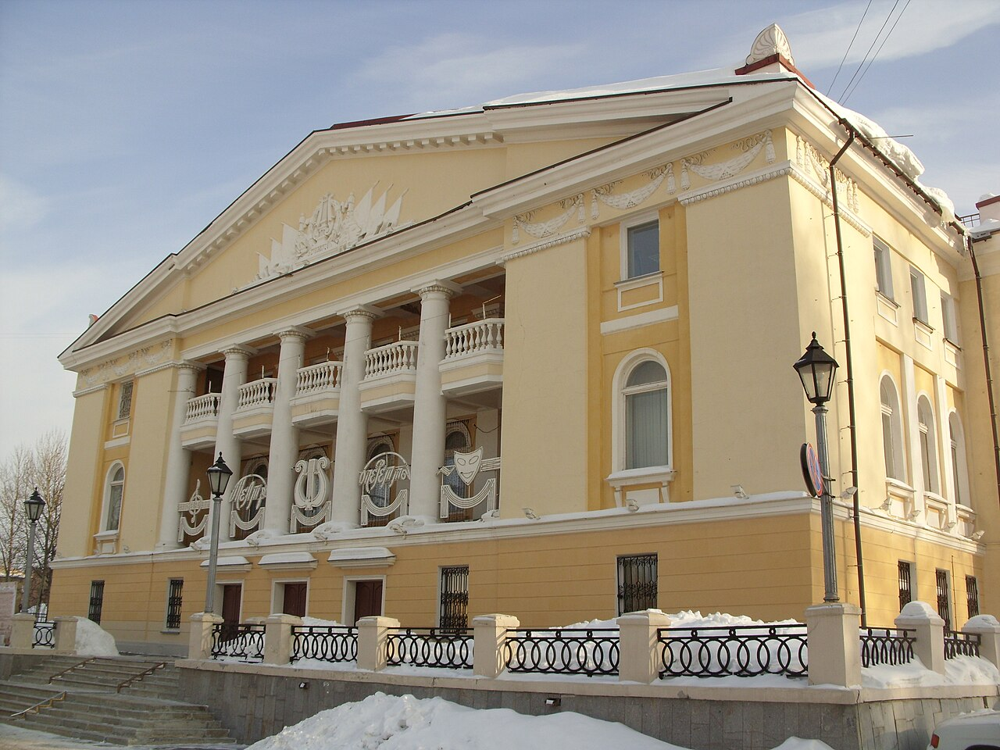

1940-1950
Уровень застройки "закрытых" городов во многом превосходил остальные города, дав прекрасные образцы архитектуры. Начальный период строительства Новоуральска, 1940-1950-е годы, относится ко времени рассвета архитектуры совесткой неоклассики, застройка города велась в стиле сталинского ампира, неоклассицизма.
В городе сохранилось много жилых и общественных зданий данной стилистики.


Уже с 1947 года началась застройка двух-,трёх- и четырёхэтажными домами в стиле сталинского ампира с полуколоннами, пилястрами, арками, фонариками, лепниной в духе советского времени. Самым ярким примером данного стиля на улице Гагарина является жилое здание, где раньше был ЗАГС.
Точками притяжения для горожан служили здания клубов, которые в последствии превратились в полноценные театры и Дома культуры - ДК, напоминающие дореволюционные дворцы.
Театр музыки, драмы и комедии построен в стиле сталинского ампира с элементами монументализма. Центральный фасад имеет греческий портик. Стены театра жёлто-бежевого цвета с четырьмя белыми пилястрами над входом.
Ещё одно красивое здание - ДК УЭХК, одно из самых первых многоэтажных зданий города, так же в стиле сталинского ампира, украшение и архитектурная доминанта Новоуральска: шестиколонный портик, треугольный фронтон, 5 арочных окон, балкон с каменными периллами, много красивой лепнины, необычные украшения, барельефы, геральдическая композиция с символикой советского государства.
1960-1980
Но даже особый статус закрытых городов не спас их архитектуру от прогрессивных веяний. В начале 60-х по всей стране начинается борьба с архитектурными излишествами.В атомных городах постепенно организовываются самостоятельные проектные группы. С конца 60-х - начала 70-х годов они создавали индивидуальные проекты различных общественных зданий.
На смену лепнине идёт кирпич, затем бетонные панели. Однако главный принцип - не выделяться на местности - позволяет сохранить малоэтажность атомградов, в частности и в Новоуральске. Новые микрорайоны 70-х по высоте редко превышают 5-8 этажей, жильё возводилось в основном по типовым проектам.
В 80-е годы город активно развивался, были снесены все ветхие постройки, отремонтированы фасады старых домов.
Одна из достопримечательностей Новоуральска, встречающая гостей города со стороны Верх-Нейвинского пруда - жилой дом номер 13 по улице Мичурина. Это самое высокое многоэтажное строение, высота дома более 53 метра. Строительство этого дома началось в 1982 году "Для создания выразительного силуэта застройки г. Свердловска-44 в условиях сложного рельефа", красоту фасаду дома придаёт специально разработанная бетонно-песчаная плитка на белом цементе.
1990-е
В середине 1990-х специализированные строительные предприятия атомных городов акционировались и начали работать как коммерчесике структуры. С приходом рынка и ослаблением секретного статуса ( города перестали "прятать" от аэрофотосъёмки) изменился и стиль их застройки. Стали массово появляться высотные здания из кирпича и так называемые заливные высотки.

Но и в этом случае микрорайонный принцип застройки позволил сохранить высокий уровень озеленения. 4 января 1994 года городу Свердловску-44 было возвращено историческое название - Новоуральск.
В 90-е годы началось освоение нового жилого района - Южного. В соответствии с разработанной программой "Квартира" продолжалось строительство в Привокзальном районе. Появлялись новые административные и коммерческие здания, открылись Центральная городская библиотека и концертно-спортивный комплекс, отличавшиеся по архитектурному решению от старых застроек.
2000-е
С начала 2000-х годов специализированные атомные проектные организации превратились в обычные коммерческие компании. Соответственно, и проектные решения для застройки каждая компания искала сама. Новостройки возводили, исходя из коммерческих возможностей застройщиков. Где-то строили высотки из красного кирпича, где-то бетонные "свечки". Новостройки города стали похожи на типичные здания соседних крупных городов.
Новоуральск возведён руками людей, которые пришли на необжитые места и начали строительство с первого колышка. И построили прекрасный город, один из первых центров атомной отрасли в стране.
Сейчас Новоуральск - это современная архитектура, город, утопающий в зелени, затерянный среди озёр, лесов и Уральских гор, с чистыми улицами и тихими двориками.
Коттеджная застройка - сейчас самое перспективная линия развития города. Первой ласточкой малоэтажной застройки можно считать МКР 13 на улице Ольховой.